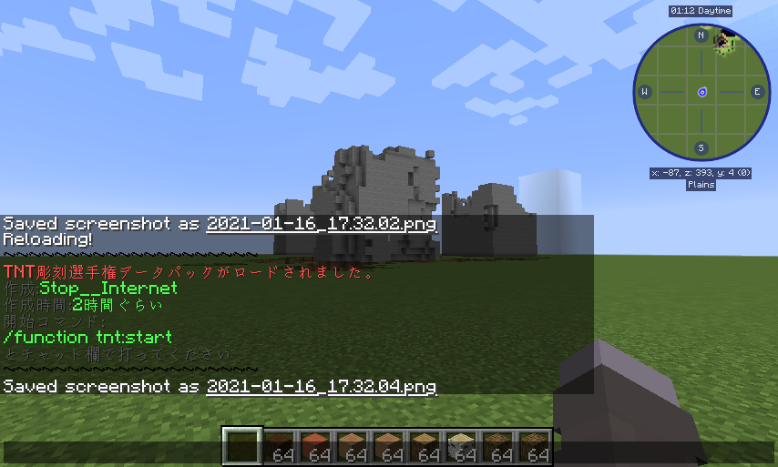
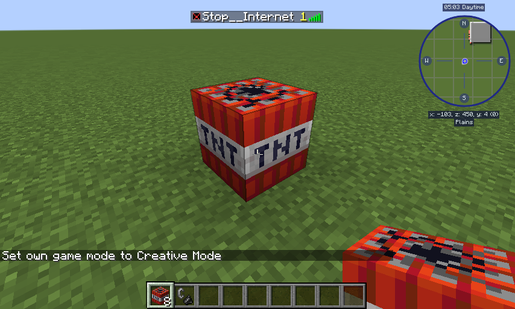
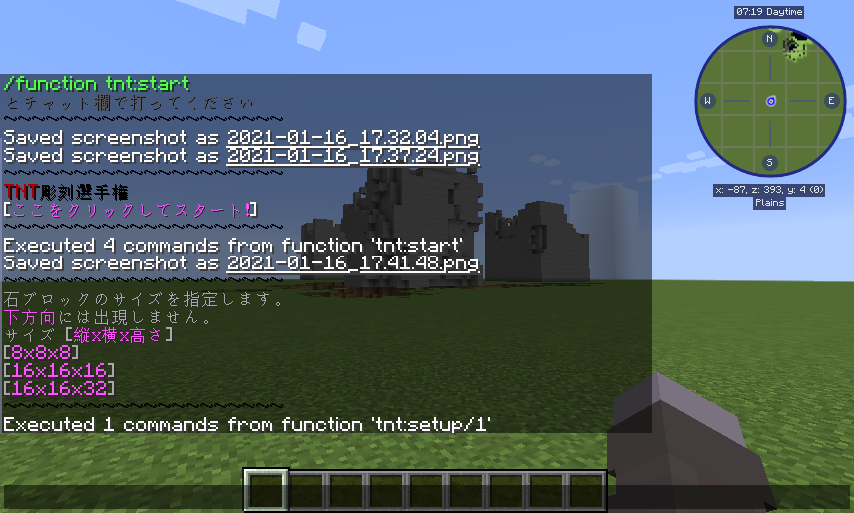
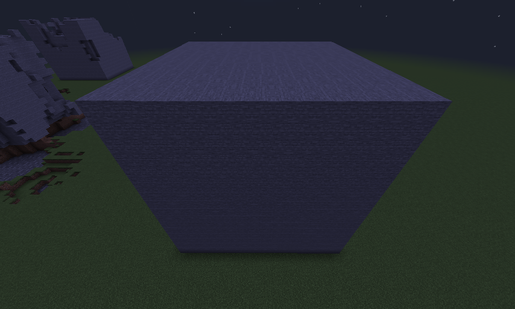
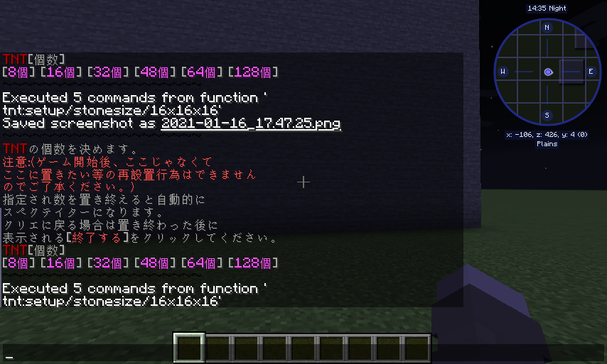
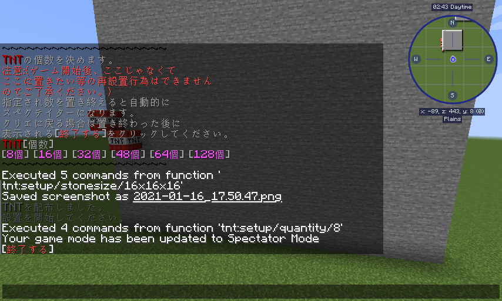

★TNT彫刻選手権データパック★
TNT彫刻選手権データパックとは、
決められたサイズと、決められたTNTの個数の中で、
TNTを置いて、爆発させて、彫刻を作るというデータパックです。
■使い方■
①Tキーでチャット欄を開いて/reloadを打つと チャット欄にこのように表示されます。
②TABキーを押すとTNTを設置した数がカウントされるようになります。
TNTを何個置いたか確認する場合をTABキーをおしてください。
③/function tnt:startをチャット欄で打つと、
画像のように表示されるので [ここをクリックしてスタート！]をクリックしてください

④クリックしたらまず石ブロックの大きさを指定します。
[縦ｘ横ｘ高さ]になってます [8x8x8] [16x16x16] [16x16x32]のどれかをクリックしてください。
そうすると、範囲にそった石ブロックが生成されます。
以下画像は16x16サイズのものです。
⑤サイズを選択後、つぎはTNTを何個使うか指定することができます。
TNT[個数]となっています。
[8個] [16個] [32個] [48個] [64個] [128個] 注意事項として、
再設置行為（TNTを置く場所を間違えてしまった場合等）した場合その分のカウントもされるので 注意してください。
⑥設置が終わると自動的にスペクテイターになります。
クリエイティブモードに戻りたい場合、TNT設置終了後に表示される[終了する]をくりっくしてください